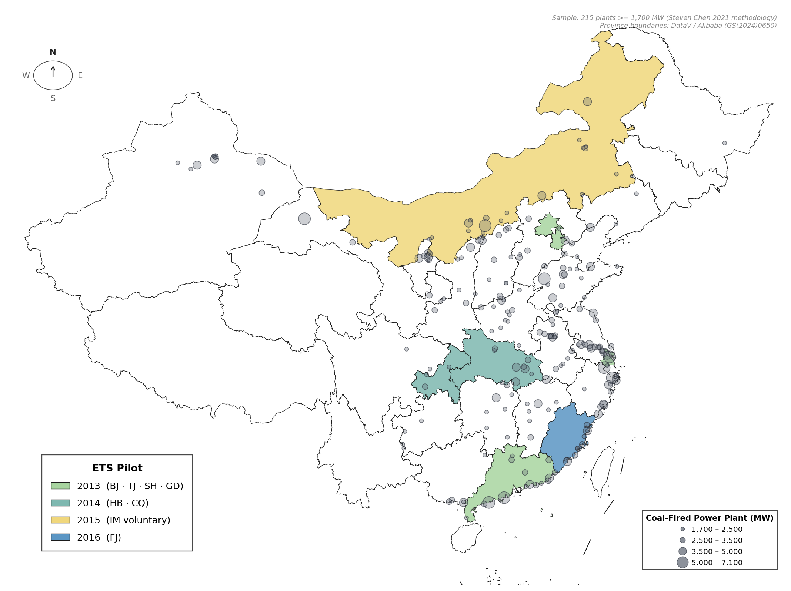
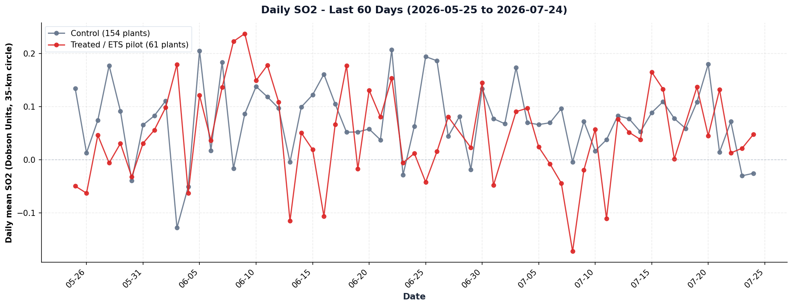
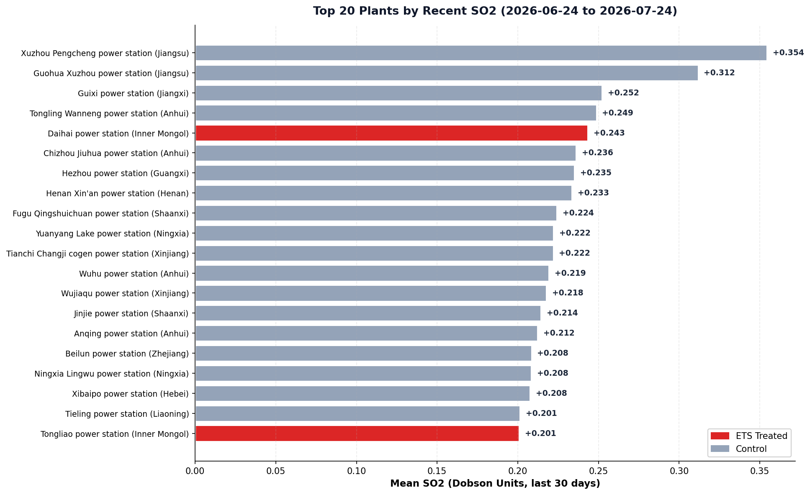
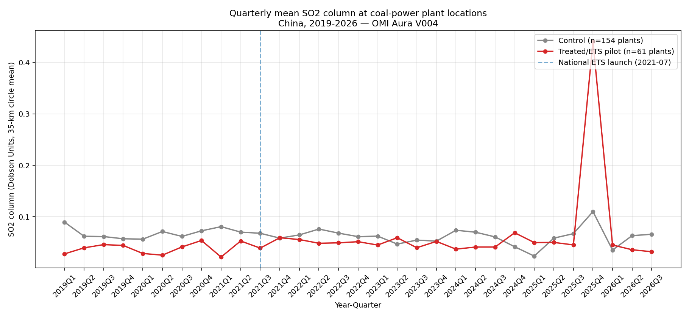

参照 Steven Chen (2021) Figure 1 设计：省份背景色 = ETS pilot 启动年份；圆圈大小 = 电厂容量。落在彩色省份里的电厂自动是 treated（61 plants），白色省份的是 control（154 plants）。Province polygons from DataV / Alibaba (审图号 GS(2024)0650)。

| 2013 | 北京 · 天津 · 上海 · 广东（含深圳） | |
| 2014 | 湖北 · 重庆 | |
| 2015 | 内蒙古（自愿试点，存疑） | |
| 2016 | 福建 |
| 1,700 – 2,500 MW | 最小档 | |
| 2,500 – 3,500 MW | 中小档（样本中最多） | |
| 3,500 – 5,000 MW | 大档 | |
| 5,000 – 7,100 MW | 最大档 |
为什么这样编码（参照 Steven Chen 2021）： 所有电厂统一灰色，treatment 状态通过它落在哪个色块判断——彩色省份内的电厂 = ETS treated（共 61 家）；白色省份内 = control（154 家）。这样视觉信息更干净，符合论文图惯例。
圆圈半径比例： 4 档严格按 ~0.7 倍递减（最小 ≈ 中小×0.7, 中小 ≈ 大×0.7, 大 ≈ 最大×0.7），重叠时大圆不会完全吞掉小圆。
2015 内蒙古： 内蒙古自愿试点（20 plants）在本项目里算 treated，但启动年份与官方 7 大试点不同，所以用第 4 个颜色单独标出——这正是项目里"内蒙古 voluntary 7"那个待澄清的 question 1。
Daily mean SO2 column averaged across plants in each group. X-axis is calendar date. Gaps indicate days where all NASA observations were filtered out (cloud cover or quality flags).

One row per day. "Valid plants" = number of plants where NASA produced a measurement that day (varies with cloud coverage). "Top plant" = highest SO2 reading on that date.
| Date | Valid plants | Mean SO2 (DU) | Top plant of day | Top SO2 |
|---|---|---|---|---|
| 2026-07-24 | 98 | -0.002 | Daihai power station (Inner Mongolia) ETS | 0.685 |
| 2026-07-23 | 34 | -0.010 | Chongqing Shuanghuai power station (Chongqing) ETS | 0.387 |
| 2026-07-22 | 24 | +0.059 | Yulin Hengshan power station (Shaanxi) Ctrl | 0.530 |
| 2026-07-21 | 46 | +0.047 | Xuzhou Pengcheng power station (Jiangsu) Ctrl | 0.910 |
| 2026-07-20 | 61 | +0.144 | Ningxia Lingwu power station (Ningxia) Ctrl | 1.052 |
| 2026-07-19 | 78 | +0.117 | Wujiaqu power station (Xinjiang) Ctrl | 1.202 |
| 2026-07-18 | 1 | +0.059 | Guazhou Changle power station (Gansu) Ctrl | 0.059 |
| 2026-07-17 | 77 | +0.050 | Ordos Power Qipanjing power station (Inner Mongolia) ETS | 0.495 |
| 2026-07-16 | 51 | +0.116 | Panshan power station (Tianjin) ETS | 0.970 |
| 2026-07-15 | 40 | +0.115 | Junggar Suancigou power station (Inner Mongolia) ETS | 0.670 |
| 2026-07-14 | 80 | +0.048 | Weiqiao Zouping-1 power station (Shandong) Ctrl | 0.400 |
| 2026-07-13 | 41 | +0.066 | Hami-Chongqing UHV Transmission Line p (Xinjiang) Ctrl | 0.460 |
| 2026-07-12 | 67 | +0.080 | Tongmei Tashan power station (Shanxi) Ctrl | 0.420 |
| 2026-07-11 | 44 | +0.028 | Anqing power station (Anhui) Ctrl | 0.480 |
| 2026-07-10 | 35 | +0.039 | Puqi Xianning power station (Hubei) ETS | 0.390 |
| 2026-07-09 | 68 | +0.048 | Datang Sanmenxia power station (Henan) Ctrl | 0.420 |
| 2026-07-08 | 35 | -0.038 | Guohua Shouguang power station (Shandong) Ctrl | 0.625 |
| 2026-07-07 | 140 | +0.044 | Yangcheng power station (Shanxi) Ctrl | 0.540 |
| 2026-07-06 | 104 | +0.053 | Guixi power station (Jiangxi) Ctrl | 0.373 |
| 2026-07-05 | 98 | +0.051 | Guodian Baoji-2 power station (Shaanxi) Ctrl | 0.677 |
| 2026-07-04 | 152 | +0.075 | Henan Xin'an power station (Henan) Ctrl | 0.472 |
| 2026-07-03 | 60 | +0.157 | Beilun power station (Zhejiang) Ctrl | 0.930 |
| 2026-07-02 | 6 | +0.068 | XPCC Shihezi Cogen power station (Xinjiang) Ctrl | 0.200 |
| 2026-07-01 | 36 | +0.032 | Shentou power station (Shanxi) Ctrl | 0.690 |
| 2026-06-30 | 29 | +0.138 | Guoneng Shanghaimiao power station (Inner Mongolia) ETS | 0.528 |
| 2026-06-29 | 45 | -0.004 | Datong-2 power station (Shanxi) Ctrl | 0.480 |
| 2026-06-28 | 9 | +0.082 | Guodian Baoji-2 power station (Shaanxi) Ctrl | 0.730 |
| 2026-06-27 | 56 | +0.053 | Wujiaqu power station (Xinjiang) Ctrl | 0.675 |
| 2026-06-26 | 40 | +0.135 | Hebi power station (Henan) Ctrl | 0.640 |
| 2026-06-25 | 15 | +0.084 | Weihai power station (Shandong) Ctrl | 0.930 |
Plants ranked by their mean SO2 over the last 30 days. Red bars = ETS-treated plants; gray bars = Control.

Provinces sorted by average SO2 over the last 30 days.
| Province | Plants | Obs. | Mean SO2 |
|---|---|---|---|
| Ningxia | 6 | 73 | +0.159 |
| Shanxi | 10 | 92 | +0.117 |
| Liaoning | 3 | 21 | +0.115 |
| Shaanxi | 9 | 100 | +0.114 |
| Chongqing ETS | 3 | 28 | +0.087 |
| Shandong | 16 | 124 | +0.084 |
| Hebei | 6 | 53 | +0.081 |
| Inner Mongolia ETS | 20 | 186 | +0.079 |
| Zhejiang | 12 | 155 | +0.071 |
| Xinjiang | 10 | 124 | +0.070 |
| Guangxi | 5 | 16 | +0.059 |
| Henan | 13 | 121 | +0.054 |
| Sichuan | 2 | 12 | +0.048 |
| Jiangxi | 7 | 30 | +0.048 |
| Jiangsu | 20 | 48 | +0.045 |
One row per year. T = treated (61 plants), C = control (154 plants). Diff column = treated minus control.
| Year | T obs. | T mean | C obs. | C mean | Diff (T-C) |
|---|---|---|---|---|---|
| 2019 | 6,059 | +0.0386 | 13,999 | +0.0681 | -0.0295 |
| 2020 | 6,176 | +0.0384 | 13,997 | +0.0670 | -0.0286 |
| 2021 | 6,603 | +0.0421 | 14,931 | +0.0695 | -0.0275 |
| 2022 | 6,432 | +0.0485 | 15,308 | +0.0667 | -0.0182 |
| 2023 | 6,279 | +0.0483 | 15,648 | +0.0555 | -0.0072 |
| 2024 | 5,677 | +0.0461 | 14,494 | +0.0591 | -0.0130 |
| 2025 | 6,254 | +0.0719 | 15,079 | +0.0573 | +0.0145 |
| 2026 | 4,195 | +0.0439 | 10,201 | +0.0580 | -0.0141 |
Quarterly aggregation following Steven (2021) Section 5 methodology. Blue dashed line marks 2021Q3 — China's national ETS launch (2021-07-16).

DiD = Difference-in-Differences(双重差分),计量经济学经典因果方法,衡量"治疗组"和"对照组"在某政策事件前后的"差异之差"。
Naive 2×2 是最简单的版本 — 把样本切成 4 个格子: treated×pre / treated×post / control×pre / control×post,直接做差。 缺陷:没有任何控制变量,没有 plant 固定效应,没有 time 固定效应。 所有混杂因素(ULE 标准、APPC 区域、Air Ten 计划、COVID 经济冲击、天气) 都被算成 "ETS 治疗效应"。
Steven 2021 paper 用的是严格 staggered TWFE,加 plant FE + year-quarter FE + ULE × Year-Quarter + APPC × Year-Quarter + Region × Year-Quarter, 估出 ATT = +5.5% 到 +6.9%。 我们当前的 naive 2×2 给出 +79%,差 ~10 倍 — 这是因为 naive 估计不可信, Phase B 做正式 TWFE 后会回到单位数。
CSV files open in Excel / Stata / R / Python. Excel files (.xlsx) come with color-coded formatting.
本 pipeline 严格复刻 Steven (Ruoyu) Chen (2021) SSRN paper #3963306 卫星方法, 并扩展到 2026 年数据窗口,以测度国家碳市场(2021-07 启动)对 ETS 试点电厂排放的影响。
OMSO2e v004 SO2 柱浓度,Dobson Units